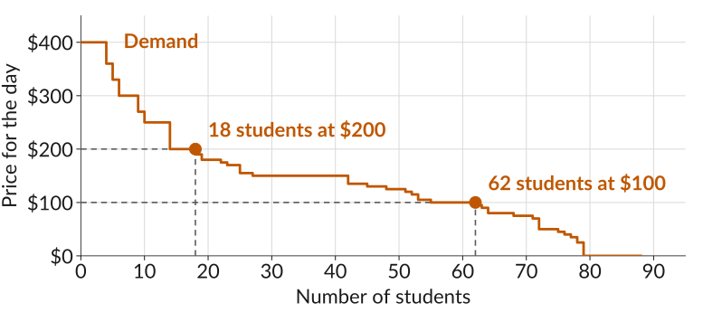
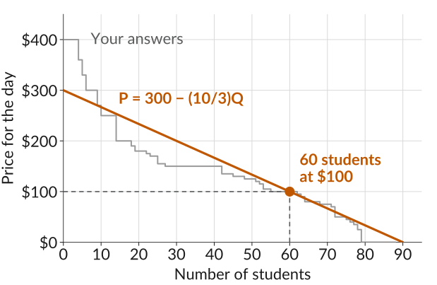
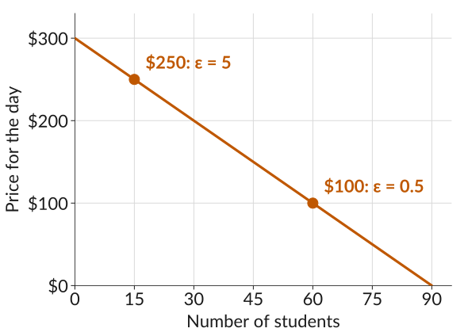

ECON 201: Principles of Microeconomics
Lecture 7
\[\text{Profit} = \underbrace{P \times Q}_{\text{revenue}} - \underbrace{C(Q)}_{\text{cost}}\]
In Lecture 3, I asked for the most you would pay for a day at a Dodgers game. What you gave me was your willingness to pay (WTP), and we can use it to construct a demand curve.

Linearizing your answers gives this demand curve:
\[P = 300 - \frac{10}{3}\,Q \quad\Rightarrow\quad Q = 90 - 0.3\,P\]

The price elasticity of demand is the percentage change in demand that would occur in response to a 1% increase in price:
\[\varepsilon = -\frac{\%\text{ change in demand}}{\%\text{ change in price}}\]
When the price rises from $100 to $110, demand falls from 60 to 57 students.
\[\begin{aligned} \%\text{ change in price} &= \frac{100 \times 10}{100} = 10\% \\[0.3em] \%\text{ change in demand} &= \frac{100 \times (-3)}{60} = -5\% \end{aligned}\]
\[\varepsilon = -\frac{-5}{10} = 0.5\]
The demand curve is given by \(Q = 90 - 0.3\,P\). Find the elasticity of demand for each $10 price rise below. At which prices is demand elastic?
\[\%\text{ change} = \frac{100 \times \text{change}}{\text{starting value}} \qquad\qquad \varepsilon = -\frac{\%\text{ change in } Q}{\%\text{ change in } P}\]
| Price rises from | Demand, \(Q\) | % change in \(P\) | % change in \(Q\) | Elasticity, \(\varepsilon\) |
|---|---|---|---|---|
| $50 to $60 | ||||
| $100 to $110 | ||||
| $200 to $210 |
When price changes by \(\Delta P\) and demand by \(\Delta Q\):
| Using | Elasticity | |
|---|---|---|
| 1 | Percentage changes | \(\varepsilon = -\dfrac{\%\text{ change in } Q}{\%\text{ change in } P}\) |
| 2 | Proportional changes | \(\varepsilon = -\dfrac{\Delta Q / Q}{\Delta P / P}\) |
| 3 | The fraction simplified | \(\varepsilon = -\dfrac{P}{Q} \times \dfrac{\Delta Q}{\Delta P}\) |
| 4 | The slope of the demand curve, \(\Delta P / \Delta Q\) | \(\varepsilon = -\dfrac{P}{Q} \times \dfrac{1}{\text{slope}}\) |
Use formula 3 to find the elasticity at the same three prices. Do you get the same answers as in Activity 1?
\[Q = 90 - 0.3\,P \qquad \varepsilon = -\frac{P}{Q} \times \frac{\Delta Q}{\Delta P}\]
| Price, \(P\) | $50 | $100 | $200 |
| Demand, \(Q\) | |||
| \(\Delta Q / \Delta P\) | |||
| Elasticity, \(\varepsilon\) |
Every $10 rise in price costs 3 students, wherever you start, so the slope is the same everywhere. Is the elasticity?

How strongly the quantity bought responds to a change in price is the price elasticity of demand.
The price of each item goes up by 1%. In each row, which one loses more buyers?
| A | B |
|---|---|
| Gas at the only station for miles | Gas at one of four stations on the same corner |
| Concert tickets | Toilet paper |
| Breakfast cereal | Apple Cinnamon Cheerios |
| Gasoline over the next five years | Gasoline this week |
| Salt | A new car |
Buyers respond more when it is easy to buy less or switch.
| Demand is more elastic when | Example from the last slide |
|---|---|
| the good has close substitutes | Gas at one of four stations, not the only one |
| the good is a luxury, not a necessity | Concert tickets, not toilet paper |
| the market is narrowly defined | Apple Cinnamon Cheerios, not all cereal |
| buyers have more time to adjust | Gasoline over five years, not this week |
| the good is a big share of the budget | A new car, not salt |
A firm’s price elasticity of demand depends on how much competition it faces from other firms. Which firm can raise its price without losing many sales?
A shop sells 20 hats per week at $10 each. When it increases the price to $12, the number of hats sold falls to 15 per week. Which of these statements are true?
(Mentimeter)
ECON 201 · Lecture 7